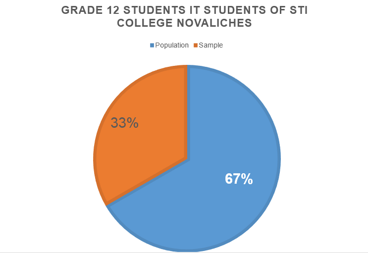

Social media is an online communication tool that enables the users to interact, communicate, and share ideas. It shows different content and information for the user. Social media sites opens an opportunity to be able to express thoughts and/or opinions. But excessive usage may cause lower self-esteem. The study is to find out what is the relation of social media to self-esteem. According to Facebook Statistics, “This recent year 2017, about 2.2 billion active users of Facebook were online every day and about 3 to 4 billion Facebook existing accounts.” By this statistical data of Facebook Data Center, it is not impossible that this medium – Facebook, has a big impact for each and every one of users, especially, adolescents.
• How often do Senior High students use Social Media each week?
• How many hours do Senior High School students spend time on Social Media?
• How many Senior High students who improved their self-esteem by using Social Media?
• How many Senior High students who decreased their self-esteem by using Social Media?
• How many Senior High students would agree if Social Media can affect their self-esteem?
The purpose of this study is to know the effects of social media to self-esteem of the students. The researchers seeks for the possible reasons why social media affects the lives of the students in different ways. Self-esteem and confidence is one of the characteristics that are being affected by social media. In this study, the researchers will provide brief explanation on how websites and the cyberspace influence the youth and if it has a positive outcome towards the students
• Null Hypothesis
(H0) ~ There is no effect on the Self-Esteem of Senior High Students when using Social Media.
• Alternative Hypothesis
H1) ~ There is an effect on the Self-Esteem of Senior High Students when using Social media.
A random sample of Grade 12 IT students of STI College Novaliches batch of 2018-2019 will be the focus of the study. And it is an analysis of the effects of Social Media among males and females in relation to Self-Esteem. The respondents of the study are the Grade 12 IT students of STI College Novaliches. We found that IT students were giving much more time online because their forte is innovation in technology and they should be timely when it comes to Social Networking Sites.
Self-Esteem - reflects an individual's overall subjective emotional evaluation of his or her own worth. It is the decision made by an individual as an attitude towards the self. Synonyms or near-synonyms of self-esteem include many things: self-worth, self-regard, self-respect, and self-integrity.
Social Media - websites and applications that enable users to create and share content or to participate in social networking.
Communication - the imparting or exchanging of information or news.
The research design used in this study is Causal-comparative. With the use of this design, it will be able to show the relationship between the cause and effect of event. In which, a fitting design for this study that aspires to show the effect of social media to senior high school students of STI College Novaliches.
The chosen research instrument for this research is a questionnaire. Composing of different questions that is related to our topic and main problem that needs to be answered. Which will be given to the senior high students of STI College Novaliches. As a quantitative research, this research aims to have a high population of answers regarding the study. Which will be achieved through the use of this instrument.
Conduction of the study will take place in STI College Novaliches. As it had been stated in the scope and delimitations that the respondents will be coming from senior high school students of STI College Novaliches. Therefore, the location that has been chosen is optimum for this study.
The population that had been chosen and that had been limited to the grade 12 senior high school students of STI College Novaliches A.Y. 2018 -2019. For those are the focus of the study in this research, concerning the effects of social media to the self-esteem of the chosen population. The sampling technique that this research will use would be non-probability sampling. There will be a criterion that will be followed in taking respondents. Although it will not give the whole population an equivalent chance, only the chosen samples will represent the whole population.
A front-end framework was used to design the whole webpage. All right reserved.